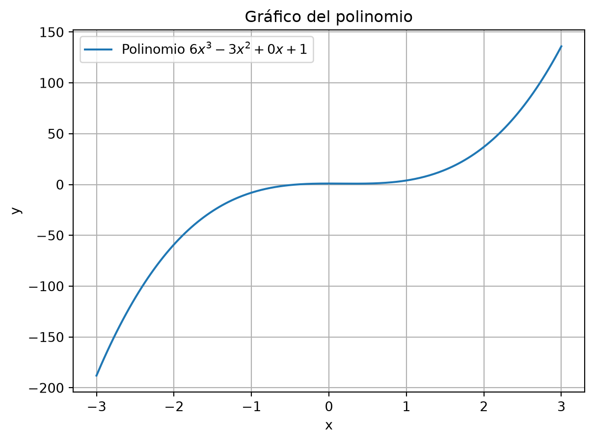
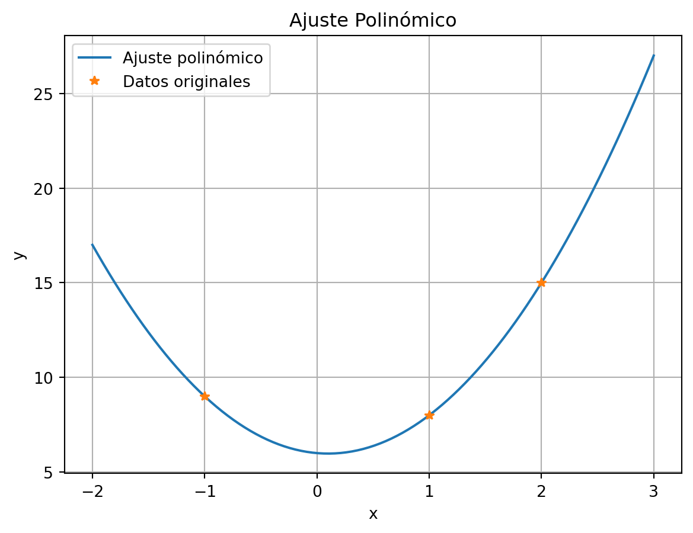
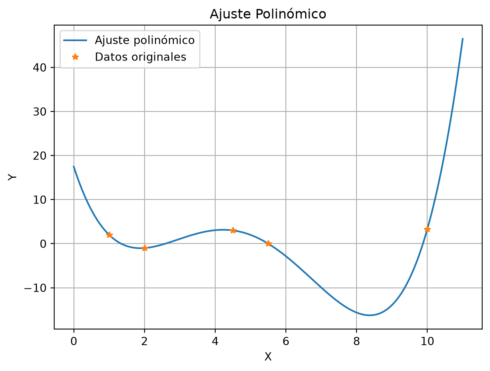
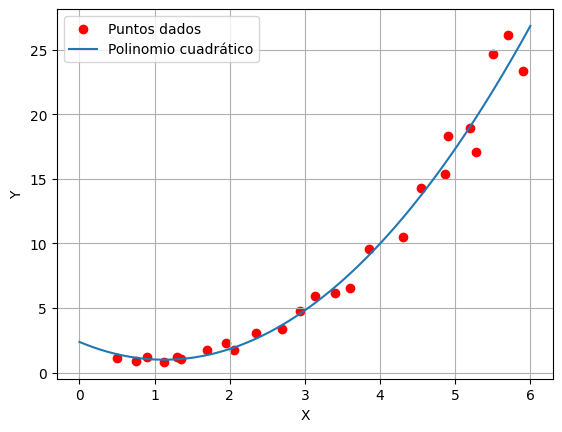
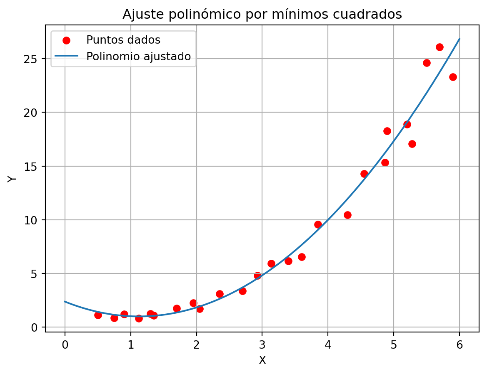
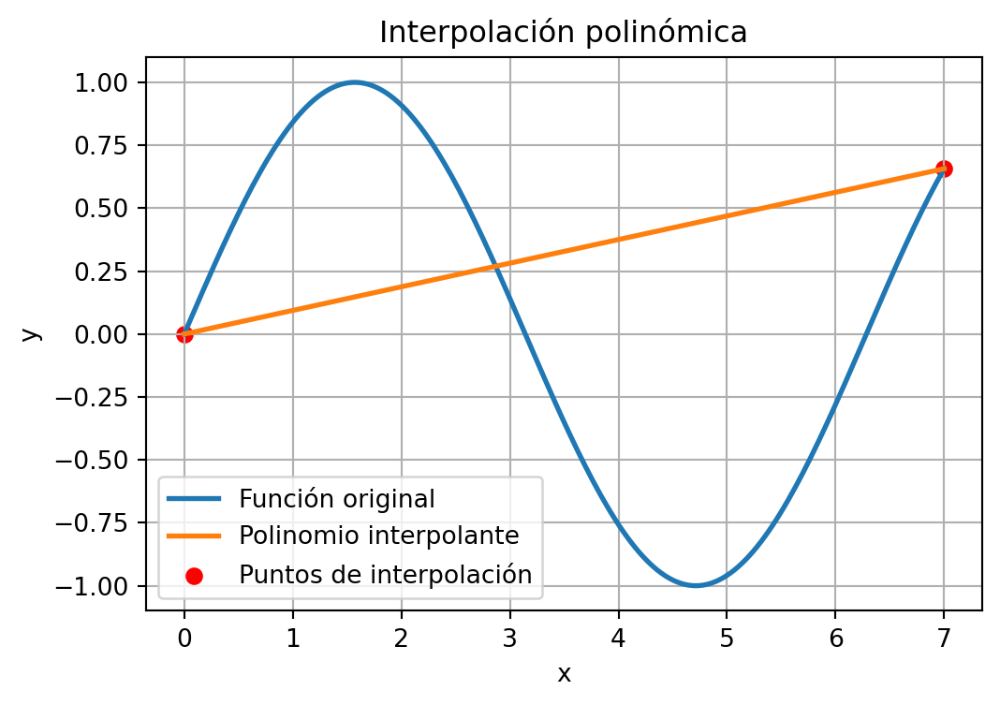
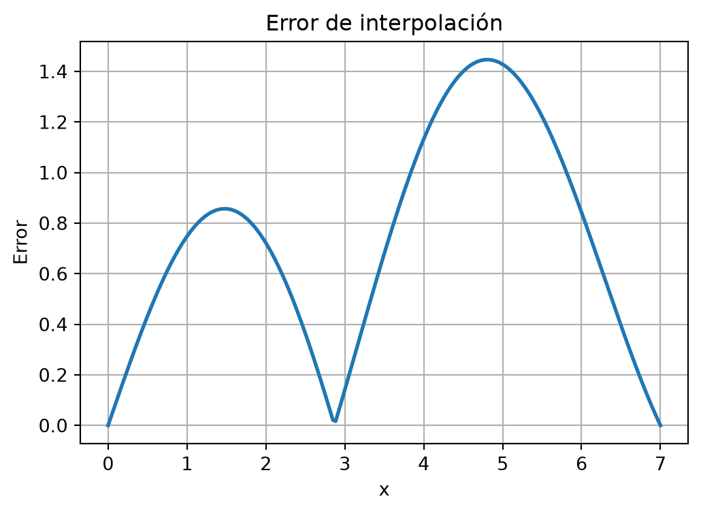
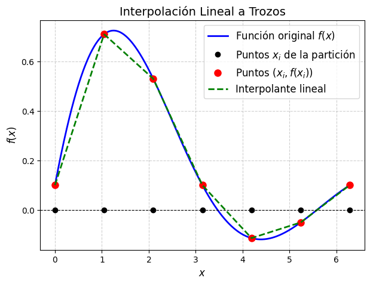
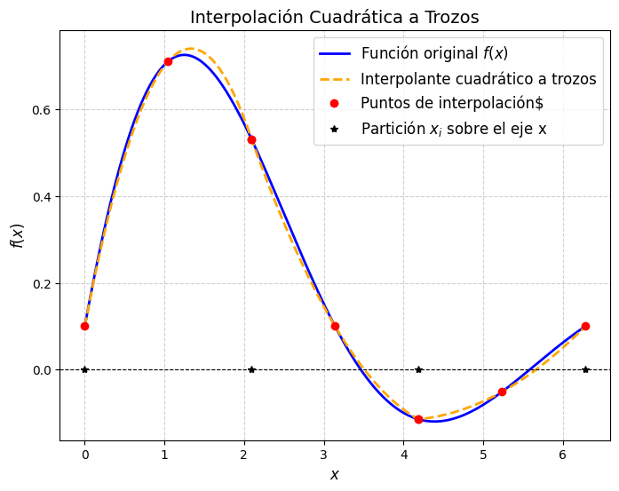

Mostrar código
import numpy as np
import matplotlib.pyplot as plt
import pandas as pdAntes de comenzar importemos las librerias que necesitaremos para este capítulo.
import numpy as np
import matplotlib.pyplot as plt
import pandas as pdConsideremos la situación en que se conocen los valores de una función en algunos puntos. Esos puntos pueden provenir de mediciones experimentales y por lo tanto podrían contener errores. Se desea hallar una función sencilla que coincida en esos puntos, o que la gráfica pase cerca.
Consideremos el caso en que queremos calcular la integral de una función sobre la que no conocemos la primitiva, por ejemplo \[ \int_0^1 e^{-x^2} \mathop{}\!\mathrm{d}x. \] En este caso, lo que se hace, es aproximar la función por funciones sencillas que se sepan integrar, y luego se integran esas funciones sencillas.
Para los matemáticos, las funciones más sencillas son los polinomios. Algunas razones por las que se consideran sencillas son las siguientes:
En python, un vector p de \(n\) componentes representa el siguiente polinomio de grado \(n-1\): \[
p(x) = \texttt{p}_1 x^{n-1} + \texttt{p}_2 x^{n-2} + \dots + \texttt{p}_{n-1} x + \texttt{p}_n.
\] Así, p = [6 -3 0 1] representa el polinomio \[
p(x) = 6 x^3 - 3 x^2 + 0 x + 1 = 6 x^3 - 3 x^2 + 1.
\]
Para evaluar un polinomio en un cierto \(x\) se utiliza la función polyval. Así, para graficar el polinomio dado en Python, sobre el intervalo \([-3,3]\), hacemos:
# Definir el polinomio
p = np.array([6, -3, 0, 1]) # Coeficientes del polinomio
# Crear un rango de valores para x
x = np.linspace(-3, 3, 300)
# Evaluar el polinomio en los puntos de x
y = np.polyval(p, x)
# Graficar
plt.plot(x, y, label="Polinomio $6x^3 - 3x^2 + 0x + 1$")
plt.xlabel("x")
plt.ylabel("y")
plt.title("Gráfico del polinomio")
plt.grid(True)
plt.legend()
plt.show()
Son fáciles de integrar, y la integral de un polinomio es otro polinomio \[ \begin{split} \int 6 x^3 - 3 x^2 + 0 x + 1 \mathop{}\!\mathrm{d}x &= 6 \frac{x^4}4 -3 \frac{x^3}3 + 0 \frac{x^2}2 + 1 x + c \\ &= \frac64 x^4 -\frac33 x^3 + \frac02 x^2 + 1 x + c \end{split} \] para cualquier constante \(c\). En general: \[ \begin{multline} \int p_1 x^{n-1} + p_2 x^{n-2} + \dots + p_{n-1} x + p_n \mathop{}\!\mathrm{d}x \\ = \frac{p_1}n x^{n} + \frac{p_2}{n-1} x^{n-1} + \dots + \frac{p_{n-1}}2 x^2 + p_n x + C. \end{multline} \]
Son fáciles de derivar, y la derivada de un polinomio es otro polinomio \[ \frac{d}{dx} \left(6 x^3 - 3 x^2 + 0 x + 1\right) = 6 \cdot 3 \, x^2 -3\cdot 2\, x + 0 , \] En general \[ \begin{multline} \frac{d}{dx} \left(p_1 x^{n-1} + p_2 x^{n-2} + \dots + p_{n-1} x + p_n \right) \\ = (n-1)p_1 x^{n-2} + (n-2)p_2 x^{n-3} + \dots + 3p_{n-3} x^2 + 2p_{n-2} x + p_{n-1}. \end{multline} \]
Dados dos puntos en el plano, pasa por ellos una única recta.
Si los dos puntos tienen diferente abscisa, entonces hay una única recta de ecuación \[ y = ax+b \] cuya gráfica pasa por los puntos.
Si tengo tres puntos con diferente abscisa, por ejemplo \[ (1,8) \qquad (-1,9) \qquad (2,15), \] veremos que pasa por ellos una única parábola de ecuación \[ y = a x^2 + b x + c. \] Veamos cómo se calcula dicha parábola. Para que la misma pase por los puntos debe cumplir \[ \begin{align*} &(1,8) \text{ está sobre la parábola } & &\iff & & 8 = a 1^2 + b 1 + c \\ &(-1,9) \text{ está sobre la parábola }& & \iff & & 9 = a (-1)^2 + b (-1) + c \\ &(2,15) \text{ está sobre la parábola } & &\iff & & 15 = a 2^2 + b 2 + c . \end{align*} \]
Nos queda entonces un sistema de 3 ecuaciones con 3 incógnitas (las incógnitas son \(a\), \(b\), \(c\)) \[ \begin{align*} 1^2 a + 1 b + c &= 8 \\ (-1)^2 a + (-1) b + c &= 9\\ 2^2 a + 2 b + c &=15 . \end{align*} \]
En forma matricial, el sistema se escribe como
\[ \begin{bmatrix} 1^2 & 1 & 1 \\ (-1)^2 & (-1) & 1 \\ 2^2 & 2 & 1 \end{bmatrix} \begin{bmatrix} a \\ b \\ c \end{bmatrix} = \begin{bmatrix} 8 \\ 9 \\ 15 \end{bmatrix} \]
Notamos que el lado derecho de la ecuación es el vector de ordenadas de los puntos (coordenadas \(y\)) y las columnas de la matriz son potencias de las abscisas de los puntos (coordenadas \(x\)). Para resolverlo en Python hacemos así:
# Definir los datos
X = np.array([1, -1, 2])
Y = np.array([8, 9, 15])
# Construir la matriz directamente
matriz = np.array([X**2, X, np.ones_like(X)]).T
# Resolver el sistema de ecuaciones por mínimos cuadrados
p = np.linalg.solve(matriz, Y)
# Mostrar resultados
print("Matriz:")
print(matriz)
print("Coeficientes del polinomio:")
print(p)Matriz:
[[ 1 1 1]
[ 1 -1 1]
[ 4 2 1]]
Coeficientes del polinomio:
[ 2.5 -0.5 6. ]Así, \(a=2.5\), \(b = -0.5\) y \(c = 6\).
Para graficar el polinomio en el intervalo \([-2,3]\) y los puntos dados hacemos lo siguiente:
# Crear un rango de valores
xx = np.linspace(-2, 3, 200)
# Evaluar el polinomio ajustado en los puntos
yy = np.polyval(p, xx)
# Graficar
plt.plot(xx, yy, label="Ajuste polinómico")
plt.plot(X, Y, '*', label="Datos originales") # Graficar los puntos de los datos
plt.xlabel("x")
plt.ylabel("y")
plt.title("Ajuste Polinómico")
plt.legend()
plt.grid(True)
plt.show()
Ahora nos preguntamos qué ocurre cuando tenemos \(n\) puntos. La respuesta está en el siguiente teorema.
Teorema 3.1 Dados \(n\) puntos \[ (x_1,y_1) \quad (x_2,y_2) \quad \dots \quad (x_n,y_n) \] con abscisas todas distintas, existe un único polinomio \(p\) de grado \(n-1\) cuya gráfica pasa por los puntos, es decir \[ p(x_i) = y_i , \quad i=1,2,\dots,n. \]
Para demostrar este teorema recordamos que el Teorema Fundamental del álgebra dice:
“Un polinomio de grado \(n-1\) tiene exactamente \(n-1\) ceros en el conjunto de los números complejos.”
Sin entrar en detalles sobre lo que son los números complejos, deducimos de ese enunciado que
Un polinomio de grado \(n-1\) tiene a lo sumo \(n-1\) ceros reales.
Esto implica a su vez que:
Ahora sí, estamos en condiciones de demostrar el teorema.
Queremos hallar el polinomio, así que proponemos \[ p(x) = p_1 x^{n-1} + p_2 x^{n-2} + \dots + p_{n-1} x + p_n. \] El mismo debe cumplir las siguiente \(n\) ecuaciones \[ \begin{align*} p(x_1) &= y_1 \\ p(x_2) &= y_2 \\ & \vdots \\ p(x_n) &= y_n. \end{align*} \]
Es decir \[ \begin{align*} p_1 x_1^{n-1} + p_2 x_1^{n-2} + \dots + p_{n-1} x_1 + p_n &= y_1 \\ p_1 x_2^{n-1} + p_2 x_2^{n-2} + \dots + p_{n-1} x_2 + p_n &= y_2 \\ & \vdots \\ p_1 x_n^{n-1} + p_2 x_n^{n-2} + \dots + p_{n-1} x_n + p_n &= y_n. \end{align*} \]
Recordando que las abscisas \(x_1, x_2, \dots, x_n\) son conocidas y las ordenadas \(y_1, y_2, \dots, y_n\) también, las incógnitas son los coeficientes \(p_1, p_2, \dots, p_n\) del polinomio. Para encontrarlos debemos resolver ese sistema de ecuaciones que en forma matricial se escribe \[ \begin{bmatrix} x_1^{n-1} & x_1^{n-2} & \dots & x_1 & 1 \\ x_2^{n-1} & x_2^{n-2} & \dots & x_2 & 1 \\ \vdots & \vdots & & \vdots & \vdots \\ x_n^{n-1} & x_n^{n-2} & \dots & x_n & 1 \\ \end{bmatrix} \begin{bmatrix} p_1 \\ p_2 \\ \vdots \\ p_{n-1} \\ p_n \end{bmatrix} = \begin{bmatrix} y_1 \\ y_2 \\ \vdots \\ y_{n-1} \\ y_n \end{bmatrix}. \tag{3.1}\]
Observamos nuevamente que el lado derecho del sistema de ecuaciones es el vector de ordenadas de los puntos (coordenadas \(y\)) y las columnas de la matriz son potencias de las abscisas de los puntos (coordenadas \(x\)). Esta matriz se conoce como matriz de Vandermonde correspondiente a \(x_1, x_2, \dots, x_n\).
Este sistema de ecuaciones tiene solución única si la matriz es invertible, lo cual puede verificarse demostrando que el problema homogéneo tiene como única solución a la trivial.
Plantear el sistema homogéneo \[ \begin{bmatrix} x_1^{n-1} & x_1^{n-2} & \dots & x_1 & 1 \\ x_2^{n-1} & x_2^{n-2} & \dots & x_2 & 1 \\ \vdots & \vdots & & \vdots & \vdots \\ x_n^{n-1} & x_n^{n-2} & \dots & x_n & 1 \\ \end{bmatrix} \begin{bmatrix} p_1 \\ p_2 \\ \vdots \\ p_{n-1} \\ p_n \end{bmatrix} = \begin{bmatrix} 0 \\ 0 \\ \vdots \\ 0 \end{bmatrix} \]
equivale a buscar el polinomio que satisface \(p(x_i) = 0\), \(i=1,2,\dots,n\).
Por lo que hemos dicho antes de comenzar la demostración, esto implica que \(p_1 = p_2 = \dots = p_{n-1} = p_n = 0\); es decir, la única solución es la trivial.
Por lo tanto, el sistema en 3.1 tiene solución única, o lo que es lo mismo, existe un único polinomio cuya gráfica pasa por los \(n\) puntos dados.
En Python, para hallar el polinomio de grado \(n-1\) que pasa por \(n\) puntos, se utiliza la función polyfit.
Por ejemplo, para hallar el polinomio de grado 4 cuya gráfica pasa por \[ (1,2)\quad (2,-1) \quad (4.5,3) \quad (5.5,0) \quad (10,3.3) \]
hacemos lo siguiente:
# Definir los datos
X = np.array([1, 2, 4.5, 5.5, 10]) # Numpy no necesita la transposición
Y = np.array([2, -1, 3, 0, 3.3])
# Ajuste polinómico de grado 4
p = np.polyfit(X, Y, 4)
print("Coeficientes del polinomio:", p)Coeficientes del polinomio: [ 0.09258458 -1.78772647 10.94941278 -24.72292168 17.46865079]Ahora grafiquemos el polinomio en el intervalo \([0,11]\) y veamos si realmente interpola los datos.
# Crear un rango de valores para xx
xx = np.linspace(0, 11, 200)
# Evaluar el polinomio ajustado en los puntos de xx
yy = np.polyval(p, xx)
# Graficar
plt.plot(xx, yy, label="Ajuste polinómico")
plt.plot(X, Y, '*', label="Datos originales") # Graficar los datos como puntos
plt.xlabel("X")
plt.ylabel("Y")
plt.legend()
plt.title("Ajuste Polinómico")
plt.grid(True)
plt.show()
Intentá hallar la solución a los siguientes problemas con los conocimientos adquiridos en esta sección.
Recordá que si bien estás buscando un resultado en particular, herramientas como gráficas u otros cálculos auxiliares pueden ser de mucha ayuda para llegar a este.
Podés resolver utilizando la celda de código dispuesta luego de los ejercicios en este mismo apunte, o corriendo python de manera local.
En la sección anterior vimos cómo calcular un polinomio interpolador de una lista de puntos. Es decir, buscábamos el polinomio cuya gráfica pasa exactamente por todos los puntos dados. Volveremos a esto en la sección siguiente, lo que será útil para obtener fórmulas de integración numérica en el capítulo próximo.
Ahora nos enfocaremos en el cálculo de un polinomio de grado bajo que pase cerca de una lista dada de puntos. Algo similar a los que muestra la siguiente gráfica:

Consideremos el caso en que tenemos \(n\) puntos \[ (x_1,y_1)\quad (x_2,y_2)\quad \dots \quad(x_n,y_n) \] con \(n\) grande, como en la gráfica, y buscamos un polinomio de grado menor o igual a 2, cuya gráfica pase lo más cerca posible de esos puntos.
Debemos definir en qué sentido el polinomio pasa cerca de los puntos. La manera más usual es lo que se conoce como la aproximación por cuadrados mínimos, que consiste en lo siguiente.
Queremos hallar el polinomio \(p(x)\) que minimice la suma de la distancia entre \(p(x_i)\) y \(y_i\) al cuadrado, es decir, que minimice la siguiente expresión \[ \big(p(x_1) - y_1\big)^2 + \big(p(x_2) - y_2\big)^2 + \dots + \big(p(x_n) - y_n\big)^2 = \sum_{i=1}^n \big(p(x_i) - y_i\big)^2. \] Geométricamente, estamos mirando la distancia vertical entre el punto dato \((x_i,y_i)\) y el punto de la gráfica con la misma abscisa \((x_i,p(x_i))\). Lo que se quiere minimizar es la suma de esas distancias al cuadrado. En notación más compacta, queremos minimizar la norma euclídea o magnitud de este vector \[ \begin{bmatrix} p(x_1) \\ p(x_2) \\ \vdots \\ p(x_n) \end{bmatrix} - \begin{bmatrix} y_1 \\ y_2 \\ \vdots \\ y_n \end{bmatrix} = \begin{bmatrix} p_1 x_1^2 + p_2 x_1 + p_3 \\ p_1 x_2^2 + p_2 x_2 + p_3 \\ \vdots \\ p_1 x_n^2 + p_2 x_n + p_3 \end{bmatrix} - \begin{bmatrix} y_1 \\ y_2 \\ \vdots \\ y_n \end{bmatrix} \] Observamos que \[ \begin{bmatrix} p_1 x_1^2 + p_2 x_1 + p_3 \\ p_1 x_2^2 + p_2 x_2 + p_3 \\ \vdots \\ p_1 x_n^2 + p_2 x_n + p_3 \end{bmatrix} = \underbrace{ \begin{bmatrix} x_1^2 & x_1 & 1 \\ x_2^2 & x_2 & 1 \\ \vdots \\ x_n^2 & x_n & 1 \end{bmatrix}}_{M} \underbrace{ \begin{bmatrix} p_1 \\ p_2 \\ p_3 \end{bmatrix}}_{\boldsymbol{p}} \] y planteamos el siguiente problema:
Hallar el vector \(\boldsymbol{p}\) que minimice la norma de \(M \boldsymbol{p} - \boldsymbol{y}\), es decir, que minimice \[ \| M \boldsymbol{p} - \boldsymbol{y} \| = \left( \sum_{i=1}^n \big[(M\boldsymbol{p})_i - y_i]^2\right)^{1/2} \]
Para resolver este problema, recordemos que \(M \boldsymbol{p}\) es una combinación lineal de las columnas de \(M\) \[ M \boldsymbol{p} = p_1 \text{col}_1(M) + p_2 \text{col}_2(M) + p_3 \text{col}_3(M), \] y por lo tanto, el problema consiste en encontrar el elemento del espacio columna de \(M\) que está lo más cerca posible de \(\boldsymbol{y}\).
Recordando un poco de geometría, vemos que \(M\boldsymbol{p}\) es el elemento de dicho espacio más cercano a \(\boldsymbol{y}\) si y sólo si el error \(\boldsymbol{y} - M \boldsymbol{p}\) es perpendicular al espacio generado por las columnas de \(M\). Es decir, si \(\boldsymbol{y}-M\boldsymbol{p}\) es perpendicular a cada columna de \(M\). Más precisamente, si se cumple que \[ \begin{align*} \text{col}_1(M) \cdot (\boldsymbol{y} - M \boldsymbol{p}) &= 0 \\ \text{col}_2(M) \cdot (\boldsymbol{y} - M \boldsymbol{p}) &= 0 \\ \text{col}_3(M) \cdot (\boldsymbol{y} - M \boldsymbol{p}) &= 0 . \end{align*} \]
Recordando que si \(u\), \(v\) son vectores columna, entonces \(u \cdot v = u^T v\) resulta que \(M\boldsymbol{p}\) debe cumplir \[ \begin{align*} \text{col}_1(M)^T (\boldsymbol{y} - M \boldsymbol{p}) &= 0 \\ \text{col}_2(M)^T (\boldsymbol{y} - M \boldsymbol{p}) &= 0 \\ \text{col}_3(M)^T (\boldsymbol{y} - M \boldsymbol{p}) &= 0 . \end{align*} \]
O, en notación mós compacta \[ \begin{bmatrix} \text{col}_1(M)^T \\ \text{col}_2(M)^T \\ \text{col}_3(M)^T \end{bmatrix} (\boldsymbol{y} - M \boldsymbol{p}) = \begin{bmatrix} 0\\0\\0 \end{bmatrix} \qquad\iff\qquad M^T (\boldsymbol{y} - M \boldsymbol{p}) = \begin{bmatrix} 0\\0\\0 \end{bmatrix} \] A su vez, esta última expresión, equivale a \[ M^T M \boldsymbol{p} = M^T \boldsymbol{y}. \] Es decir, el vector \(\boldsymbol{p}\) (de tres componentes) debe ser la solución al sistema de ecuaciones \[ \big( M^T M\big) \boldsymbol{p} = M^T \boldsymbol{y}. \]
En Python, si X, Y son vectores que tienen las abscisas y las ordenadas de los puntos, el cálculo del polinomio \(p\) se haría de la siguiente manera
# Datos (puntos dados)
X = np.array([0.5,0.75,0.9,1.12,
1.3,1.35,1.7,1.95,
2.05,2.35,2.7,2.93,
3.14,3.4,3.6,3.85,
4.3,4.55,4.87,4.9,
5.2,5.28,5.5,5.7,5.9])
Y = np.array([1.13, 0.87, 1.20, 0.83, 1.24,
1.09, 1.75, 2.26, 1.73, 3.1,
3.38, 4.8, 5.93, 6.17, 6.55,
9.56, 10.46, 14.28, 15.34, 18.29,
18.89, 17.09, 24.63, 26.10, 23.3])
# Paso 1: armado de la matriz M
M = np.array([X**2, X, np.ones_like(X)]).T
# Paso 2: armamos la matriz del sistema
A = M.T @ M
# Paso 3: armamos el lado derecho del sistema
b = M.T @ Y
# Paso 4: hallamos los coeficientes del polinomio que aproximan en el sentido de mínimos cuadrados
p = np.linalg.solve(A, b)
# Generamos el intervalo para xx, por ejemplo, [0, 6]
xx = np.linspace(0, 6, 200)
# Evaluamos el polinomio en los puntos xx
yy = np.polyval(p, xx)
# Graficamos los puntos originales y la curva ajustada
plt.scatter(X, Y, color='red', label="Puntos dados") # Puntos originales
plt.plot(xx, yy, label="Polinomio ajustado") # Curva ajustada
plt.xlabel("X")
plt.ylabel("Y")
plt.title("Ajuste polinómico por mínimos cuadrados")
plt.legend()
plt.grid(True)
plt.show()
Los Pasos \(1\) al \(4\) del procedimiento anterior pueden resumirse haciendo uso del comando polyfit, i.e.
p = np.polyfit(X,Y,2)
Sin embargo es importante entender cómo se resuelve un sistema en el sentido de mínimos cuadrados, pues hay ocasiones en que se requiere aproximar datos que provengan de funciones no polinómicas, como ser
\[ p(x) = a 3^x + b 2^x + c. \]
Aunque en este caso no podremos usar el comando np.polyfit (¿por qué?), podemos repitir los pasos anteriores pero sustituyendo la matriz \(M\) por una de la forma
M = np.array([ 3**X, 2**X, np.ones_like(X)]).T
y aún así obtener el resultado deseado.
En las ejercicios veremos casos como este y algunos aún más complejos.
Intentá hallar la solución a los siguientes problemas con los conocimientos adquiridos en esta sección.
Recordá que si bien estás buscando un resultado en particular, herramientas como gráficas u otros cálculos auxiliares pueden ser de mucha ayuda para llegar a este.
Podés resolver utilizando la celda de código dispuesta luego de los ejercicios en este mismo apunte, o corriendo python de manera local.
Volvemos ahora a la idea del polinomio interpolador, es decir, el polinomio cuya gráfica pasa exactamente por una lista de puntos.
Pero consideramos ahora que esos puntos coinciden con puntos de la gráfica \(y=f(x)\) de una función \(f\) dada.
Hagamos un poco de matemática experimental. Para ello, a continuación incluimos una función de Python pruebapolyfit que dada una función \(f\), un intervalo \([a,b]\) y un número \(n\) de puntos calcula el polinomio interpolante en \(n\) puntos equidistantes. La idea es tratar de medir el error entre la función y el polinomio hallado.
def pruebapolyfit(f, a, b, n, graf):
"""
Interpola la función f en n puntos equiespaciados en el intervalo [a, b].
Argumentos:
f -- función a interpolar
a, b -- extremos del intervalo
n -- número de puntos equiespaciados
graf -- 1 si deseamos graficar, 0 si no lo deseamos
Retorna:
p -- coeficientes del polinomio interpolante en formato numpy
maximo_error -- máximo error entre la función y el polinomio
"""
# Puntos equiespaciados en [a, b]
X = np.linspace(a, b, n)
# Evaluación de f en los puntos
Y = f(X)
# Obtención del polinomio interpolante
p = np.polyfit(X, Y, n - 1)
# Puntos adicionales para graficar
xx = np.linspace(a, b, 200)
# Evaluación de la función y del polinomio
fxx = f(xx)
pxx = np.polyval(p, xx)
# Cálculo del error absoluto
error = np.abs(fxx - pxx)
maximo_error = np.max(error)
if graf == 1:
# Gráfico 1: Función original y polinomio interpolante
plt.figure(1, figsize=(6,4))
plt.plot(xx, fxx, label="Función original", linewidth=2)
plt.plot(xx, pxx, label="Polinomio interpolante", linewidth=2)
plt.scatter(X, Y, color='red', label="Puntos de interpolación")
plt.legend()
plt.xlabel("x")
plt.ylabel("y")
plt.title("Interpolación polinómica")
plt.grid(True)
plt.show()
# Gráfico 2: Error absoluto
plt.figure(2, figsize=(6,4))
plt.plot(xx, error, label="Error absoluto", linewidth=2)
plt.xlabel("x")
plt.ylabel("Error")
plt.title("Error de interpolación")
plt.grid(True)
return p, maximo_error# Definimos la función a interpolar
f = lambda x: np.sin(x)
# Intervalo y
a, b = 0, 7
# Número de puntos
n = 2
# Activamos la opción para que grafique
graf = 1
# Llamada a la función
p,max_error=pruebapolyfit(f,a,b,n,graf)

Ahora hagamos diferentes pruebas a la medida que incrementamos la cantidad de puntos, es decir \(n\), y veamos cómo se comporta el error. Variemos \(n\) entre 2 y 10:
# Número de puntos
n = 2
# Desactivamos la opción para que grafique
graf = 0
# Llamada a la función
p, max_error = pruebapolyfit(f,a,b,n,graf)
print("Máximo error para n =",n, "es", max_error)Máximo error para n = 2 es 1.4466095683250675Asegurese de obtener los siguientes resultados:
| n | Máximo error |
|---|---|
| 2 | 1.44660957e+00 |
| 3 | 1.33191877e+00 |
| 4 | 5.72191304e-01 |
| 5 | 3.11311304e-01 |
| 6 | 8.74212989e-02 |
| 7 | 4.02631509e-02 |
| 8 | 7.86685727e-03 |
| 9 | 3.16013241e-03 |
| 10 | 4.66733914e-04 |
Vemos en este ejemplo que el error tiende a cero a medida que aumentamos el número \(n\) de puntos.
Consideremos ahora \(f = e^{-x^2}\) y veamos qué ocurre cuando realizamos el mismo experimento en el intervalo \([-1,3]\) con \(n\) variando nuevamente entre \(2\) y \(10\):
# Definimos la función a interpolar
f = lambda x: np.exp(-x**2)
# Intervalo y
a, b = -1, 3
# Número de puntos
n = 20
# Desctivamos la opción para que grafique
graf = 0
# Llamada a la función
p, max_error = pruebapolyfit(f,a,b,n,graf)
print("Máximo error para n =",n, "es", max_error)Máximo error para n = 20 es 1.3104506380908967e-05Nuevamente, variando \(n\) entre \(2\) y \(10\), asegúrese de obtener los siguientes resultados:
| n | Máximo error |
|---|---|
| 2 | 7.26174300e-01 |
| 3 | 5.86126964e-01 |
| 4 | 2.06981565e-01 |
| 5 | 2.36921234e-01 |
| 6 | 8.43537280e-02 |
| 7 | 6.56210558e-02 |
| 8 | 5.20115150e-02 |
| 9 | 2.36662973e-02 |
| 10 | 1.94718910e-02 |
Aquí también parece ser que el error tiende a cero, aunque da la impresión de que esto ocurre más lentamente que en el ejemplo anterior.
Veamos un último ejemplo.
Consideremos la función \(f(x) = \frac{1}{1+x^2}\) sobre el intervalo \([-5,5]\).
# Definimos la función a interpolar
f = lambda x: 1/(1+x**2)
# Intervalo y
a, b = -5, 5
# Número de puntos
n = 30
# Desctivamos la opción para que grafique
graf = 0
# Llamada a la función
p, max_error = pruebapolyfit(f,a,b,n,graf)
print("Máximo error para n =",n, "es", max_error)Máximo error para n = 30 es 323.7698844705722Varian \(n\) entre 2 y 10 nuevamente.
Deberíamos obtener los siguientes resultados:
| n | Máximo error |
|---|---|
| 2 | 9.60907563e-01 |
| 3 | 6.46215488e-01 |
| 4 | 7.06389103e-01 |
| 5 | 4.38211374e-01 |
| 6 | 4.32105113e-01 |
| 7 | 6.16546098e-01 |
| 8 | 2.46844279e-01 |
| 9 | 1.04514332e+00 |
| 10 | 3.00095887e-01 |
Aquí hay algo raro. Veamos qué ocurre si seguimos con \(n\) entre 11 y 17:
# Número de puntos
n = 11
# Llamada a la función
p, max_error = pruebapolyfit(f,a,b,n,graf)
print("Máximo error para n =",n, "es", max_error)Máximo error para n = 11 es 1.9155693302904038| n | Máximo error |
|---|---|
| 11 | 1.91556933e+00 |
| 12 | 5.54178816e-01 |
| 13 | 3.65539721e+00 |
| 14 | 1.06386411e+00 |
| 15 | 7.19076961e+00 |
| 16 | 2.09791474e+00 |
| 17 | 1.43286158e+01 |
Aquí se ve que la cosa no anda tan bien. El error no parece tender a cero. Para entender qué está ocurriendo debemos ver un poco de teoría.
El teorema del error de interpolación dice lo siguiente.
A su vez podemos obtener los siguientes corolarios.
Corolario 3.1 Si no se sabe dónde están los puntos \(x_i\), entonces, para cada \(x \in [a,b]\) sólo sabemos que \(|x-x_i|\le |b-a|\). Del teorema anterior concluimos que: \[ \max_{x\in[a,b]} |f(x)-p(x)| \le \frac{M_{n}}{n!} |b-a|^n. \]
Corolario 3.2 Si los puntos \(x_i\) están equiespaciados y \(x_1=a\), \(x_n=b\), es decir \[ x_i = a + (i-1) \Delta x, \qquad\text{con}\quad \Delta x = \frac{b-a}{n-1}, \] entonces resulta (pensemos que \(x \in [x_1,x_2]\)) \[ |x-x_1|\,|x-x_2|\dots |x-x_n| \le \Delta x \, \Delta x \, 2\Delta x \, 3\Delta x \, \dots (n-1) \Delta x = (n-1)! \Delta x^n \] Luego, \[ \Delta x^n = \frac{|b-a|^n}{(n-1)^n} \] Entonces, \[ |x-x_1|\,|x-x_2|\dots |x-x_n| \le (n-1)! \frac{|b-a|^n}{(n-1)^n} \] Por lo tanto, del teorema anterior obtenemos \[ \max_{x\in[a,b]} |f(x)-p(x)| \le \underbrace{\frac{M_n}{n} \frac{|b-a|^n}{(n-1)^n}}_{\text{cota del error}}. \]
Vimos en la sección anterior que la cota del error para un polinomio \(p\) que interpola a una función \(f\) en \(n\) puntos equiespaciados sobre el intervalo \([a,b]\) es \[ |f(x) - p(x)| \le M_n \frac{|b-a|^n}{n(n-1)^n}, \] con \(M_n = \max_{\xi\in[a,b]} |f^n(\xi)|\).
También vimos que en algunos casos \(M_n\) puede ser muy grande para \(n\) grande. En este caso, no sirve de mucho aumentar excesivamente el número de puntos de interpolación.
¿Qué se puede hacer para asegurar que el error tiende a cero?
Una cosa que se puede hacer es utilizar interpolación polinomial a trozos.
La idea es fijar el grado polinomial \(n-1\) e interpolar con ese grado (fijo) sobre \(L\) sub-intervalos. Más precisamente. Consideremos un intervalo \([a,b]\) y un número entero positivo \(L\). Subdividamos el intervalo \([a,b]\) en \(L\) sub-intervalos de longitud \(h = \frac{|b-a|}L\).
Llamemos \(y_1\), \(y_2\), \(\dots\), \(y_{L+1}\) a los extremos de esos sub-intervalos, es decir \[ y_1 = a, \quad y_2 = a+h, \quad y_3 = a+2h, \quad\dots\quad y_L = a+(L-1)h = b-h, \quad y_{L+1} = a+Lh = b. \] Luego, interpolemos en cada sub-intervalo con un polinomio de grado \(n-1\).
En el gráfico a continuación se muestra un ejemplo para \(n=2\). Es decir, en cada sub-intervalo \([y_i,y_{i+1}]\) se interpola con una función lineal (polinomio de grado \(n-1=1\)) que coincide en los extremos de ese sub-intervalo.

En el caso \(n=3\) consideramos, en cada sub-intervalo, el polinomio de grado 2 que interpola en los extremos y en el punto medio de ese sub-intervalo.

Así, se puede realizar para cualquier grado polinomial.
Luego, por el teorema del error de interpolación, si fijamos \(n\) (no demasiado grande) y miramos el error en un sub-intervalo, resulta que \[ |f(x) - p(x)| \le \frac{M_n}{n(n-1)^n} \left(\frac{ |b-a|}L\right)^n. \] Notemos que hemos cambiado \(|b-a|\) por \(\frac{|b-a|}L\), ya que estamos considerando un sub-intervalo, que tiene longitud \(h = \frac{|b-a|}L\).
Resumimos esta observación en el siguiente teorema.
Observemos que \(n\) está fijo, y que podemos tomar \(L\) grande. Si hacemos tender \(L\) a infinito, resulta que \[ |f(x) - p(x)| \le \frac{M_n}{n(n-1)^n} \left(\frac{ |b-a|}L\right)^n = \frac{M_n |b-a|^n}{n(n-1)^n} \frac1{L^n} \to 0, \] cuando \(L\to\infty\).
Esto quiere decir que sin importar como se comporten las derivadas de nuestra función siempre que aumentemos la cantidad de subintervalos el error de interpolación a trozos tenderá a cero.
Polinomios de Lagrange: no muy utilizados en la práctica, pero muy útiles en contextos teóricos.
Polinomios de Hermite cúbicos: similar a los splines cúbicos, pero además de los valores de las funciones, también se toman en cuenta las derivadas en los puntos de interpolación.
Polinomios de Bézier: se utilizan principalmente en gráficos y diseño asistido por computadora. Su forma se puede controlar mediante puntos de control.
Polinomios de B-Spline: son una generalización de los splines cúbicos y se usan en modelado de estructuras con suvidades múltiples y en la resolución de ecuaciones diferenciales.
Intentá hallar la solución a los siguientes problemas con los conocimientos adquiridos en esta sección.
Recordá que si bien estás buscando un resultado en particular, herramientas como gráficas u otros cálculos auxiliares pueden ser de mucha ayuda para llegar a este.
Podés resolver utilizando la celda de código dispuesta luego de los ejercicios en este mismo apunte, o corriendo python de manera local.
Intentá hallar la solución a los siguientes problemas con los conocimientos adquiridos en este capítulo. Como verás, no hay un método único para resolver la mayoría de estos ejercicios.
Recordá que si bien estás buscando un resultado en particular, herramientas como gráficas u otros cálculos auxiliares pueden ser de mucha ayuda para llegar a este.
Podés resolver utilizando la celda de código dispuesta luego de los ejercicios en este mismo apunte, o corriendo python de manera local.